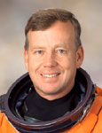

Lyndon B. Johnson Space Center
Houston, Texas 77058
|
National Aeronautics and Space Administration Lyndon B. Johnson Space Center Houston, Texas 77058 |
 |
Biographical Data |
||
Steven W. Lindsey (Colonel, USAF, Ret.)
NASA ASTRONAUT (FORMER)
PERSONAL DATA: Born August 24, 1960, in Arcadia, California. Considers Temple City, California, to be his hometown. Married to the former Diane Renee Trujillo. They have three children. He enjoys reading, skiing, scuba diving, windsurfing, camping, mountain biking and dirt biking. Steve’s mother, Lois Lindsey, resides in Arcadia, California. His father, Arden L. Lindsey, is deceased. Diane’s parents, Gene and Marcene Trujillo, reside in Glendale, Arizona.
EDUCATION: Graduated from Temple City High School, Temple City, California, in 1978; received a bachelor of science degree in engineering sciences from the U.S. Air Force Academy in 1982 and a master of science degree in aeronautical engineering from the Air Force Institute of Technology in 1990.
ORGANIZATIONS: Member, Society of Experimental Test Pilots, USAF Academy Association of Graduates, Association of Space Explorers.
SPECIAL HONORS: Distinguished Graduate, Air Force Undergraduate Pilot Training (1983). Distinguished Graduate and recipient of the Liethen-Tittle Award as the outstanding test pilot of the USAF Test Pilot School Class 89A (1989). Awarded Legion of Merit, Distinguished Flying Cross, Defense Superior Service Medal, Defense Meritorious Service Medal, four NASA Space Flight Medals, NASA Outstanding Leadership Medal, NASA Distinguished Service Medal, NASA Exceptional Service Medal, Air Force Meritorious Service Medal, Air Force Commendation Medal, Air Force Achievement Medal and Aerial Achievement Medal.
EXPERIENCE: Lindsey was commissioned a second lieutenant at the United States Air Force Academy, Colorado Springs, Colorado, in 1982. In 1983, after receiving his pilot wings at Reese Air Force Base, Texas, he qualified in the RF-4C Phantom II and was assigned to the 12th Tactical Reconnaissance Squadron at Bergstrom Air Force Base, Texas. From 1984 until 1987, he served as a combat-ready pilot, instructor pilot, and academic instructor. In 1987, he was selected to attend graduate school at the Air Force Institute of Technology, Wright-Patterson Air Force Base, Ohio, where he studied aeronautical engineering. In 1989, he attended the USAF Test Pilot School at Edwards Air Force Base, California. In 1990, Lindsey was assigned to Eglin Air Force Base, Florida, where he conducted weapons and systems tests in F-16 and F-4 aircraft. While a member of the 3247th Test Squadron, Lindsey served as the deputy director, Advanced Tactical Air Reconnaissance System Joint Test Force and as the squadron’s F-16 Flight Commander. In August 1993, Lindsey was selected to attend Air Command and Staff College at Maxwell Air Force Base, Alabama. Upon graduation in June 1994, he was reassigned to Eglin Air Force Base, Florida as an Integrated Product Team leader in the USAF SEEK EAGLE Office where he was responsible for Air Force weapons certification for the F-16, F-111, A-10, and F-117 aircraft. In March 1995, he was assigned to NASA as an astronaut candidate. Lindsey retired from the Air Force in September 2006.
He has logged over 7000 hours of flying time in more than 50 different types of aircraft.
NASA EXPERIENCE: Selected by NASA in March 1995, Lindsey became an astronaut in May 1996, qualified for flight assignment as a pilot. Initially assigned to flight software verification in the Shuttle Avionics Integration Laboratory, Lindsey also worked on the Multifunction Electronic Display System (MEDS) program, a glass cockpit space shuttle upgrade program, as well as a number of other advanced upgrade projects. In between his first two flights, he worked as the shuttle landing and rollout representative, responsible for training flight crews and testing orbiter landing techniques and flying qualities. After his second flight, Lindsey served as Deputy for Shuttle Operations and Co-Chairman of the Space Shuttle Cockpit Council, responsible for designing, testing, and implementing crew interfaces and displays for the $400 million Shuttle Cockpit Avionics Upgrade. He served as the Chief of International Space Station Operations for the Astronaut Office, responsible for integrating astronaut, engineering and administrative activities in providing support to all aspects of the development, testing, crew training and operations of the International Space Station. He last served as Chief of the Astronaut Corps, responsible for spacecraft development, crew selection and training, and flight test/crew operations in support of the Space Shuttle, International Space Station and Constellation Programs. Lindsey retired from NASA on July 15, 2011.
A veteran of four space flights, Lindsey has logged more than 1,510 hours in space. He served as pilot on STS-87 in 1997 and STS-95 in 1998 and was the mission commander on STS-104 in 2001, STS-121 in 2006 and STS-133 in 2011.
SPACEFLIGHT EXPERIENCE: STS-87 (November 19 to December 5, 1997) was the fourth U.S. Microgravity Payload flight and focused on experiments designed to study how the weightless environment of space affects various physical processes and on observations of the Sun’s outer atmospheric layers. Two members of the crew performed two EVAs (spacewalks) that featured the manual capture of a Spartan satellite and tested EVA tools and procedures for future space station assembly. During one EVA, Lindsey piloted the first flight of the AERCam Sprint, a free-flying robotic camera. The mission was accomplished in 252 orbits of the Earth, traveling 6.5 million miles in 376 hours and 34 minutes.
STS-95 (October 29 to November 7, 1998) was a 9-day mission during which the crew supported a variety of research payloads, including deployment and retrieval of the Spartan solar-observing spacecraft, the Hubble Space Telescope Orbital Systems Test Platform and investigations on spaceflight and the aging process. The mission was accomplished in 134 Earth orbits, traveling 3.6 million miles in 213 hours and 44 minutes.
STS-104 (July 12 to July 24, 2001), designated assembly mission 7A, was the 10th mission to the International Space Station (ISS). During the 13-day flight, the crew conducted joint operations with the Expedition 2 crew and performed three spacewalks to install the ISS joint airlock Questand tooutfit it with four high-pressure gas tanks. In addition to installing and activating the joint airlock, the crew also performed the first spacewalk from Quest. The mission was accomplished in 200 Earth orbits, traveling 5.3 million miles in 306 hours and 35 minutes.
STS-121 (July 4 to July 17, 2006), was a return-to-flight test mission and assembly flight to the International Space Station. During the 13-day flight, the crew of Space Shuttle Discovery tested new equipment and procedures that increase the safety of space shuttles, repaired a rail car on the International Space Station and produced never-before-seen, high-resolution images of the shuttle during and after its July 4th launch. The crew also performed maintenance on the space station and delivered and transferred more than 28,000 pounds of supplies and equipment and a new Expedition 13 crewmember to the station. The mission was accomplished in 200 Earth orbits, traveling 5.3 million miles in 306 hours and 38 minutes.
STS-133 (February 24 to March 9, 2011), was the 39th and final mission for Space Shuttle Discovery. During the 13-day flight, the Discovery crew delivered the Permanent Multipurpose Module (PMM) and the fourth Express Logistics Carrier (ELC) to the ISS. The crew also delivered critical spare components, including Robonaut 2, or R2, the first human-like robot in space. The mission’s two space walks assisted in outfitting the truss of the station and completed a variety of other tasks designed to upgrade station systems. The mission was accomplished in 202 Earth orbits, traveling 5.3 million miles in 307 hours and 3 minutes.
JULY 2011